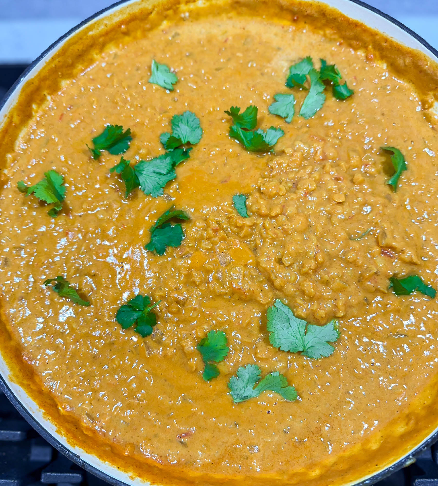

Dhal de lentilles corail

Description
An indian dish with lentils and coconut milk
Ingredients
- un oignon
- trois carottes
- une boîte de tomates pelées
- des lentilles corails (je met un volume équivalent à 100g de riz)
- du bouillon de légumes
- gingembre moulu 1cc
- gingembre moulu 1cc
- curcuma moulu 1cc
- une pincée de paprika
- une gousse d'ail finement hachée
- du lait de coco
- sel, poivre, huile
Steps
- Faire cuire les lentilles dans deux fois et demi leur volume de bouillons de légumes
- Couvrir et surveiller la cuisson, ajouter de l'eau si besoin.
- Éplucher et couper les carottes en petits morceaux, les ajouter à l'oignons. Baisser le feu, couvrir et remuer fréquemment.
- Quand les carottes sont tendres, ajouter les tomates coupées à la préparation ainsi que le jus. Mélanger puis ajouter les épices et l'ail.
- Laisser mijoter quelques minutes puis ajouter les lentilles cuites. Bien mélanger. Si le mélange parait sec, ajouter du coulis de tomate. Laisser mijoter à couvert une dizaine de minute.
- Ajouter le lait de coco, bien mélanger et servir aussitôt avec du riz basmati par exemple.
Home